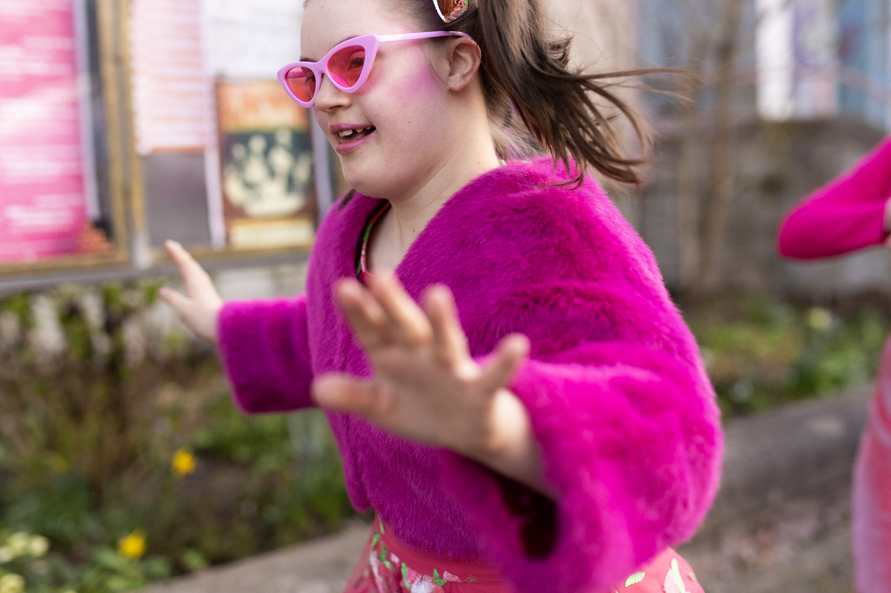
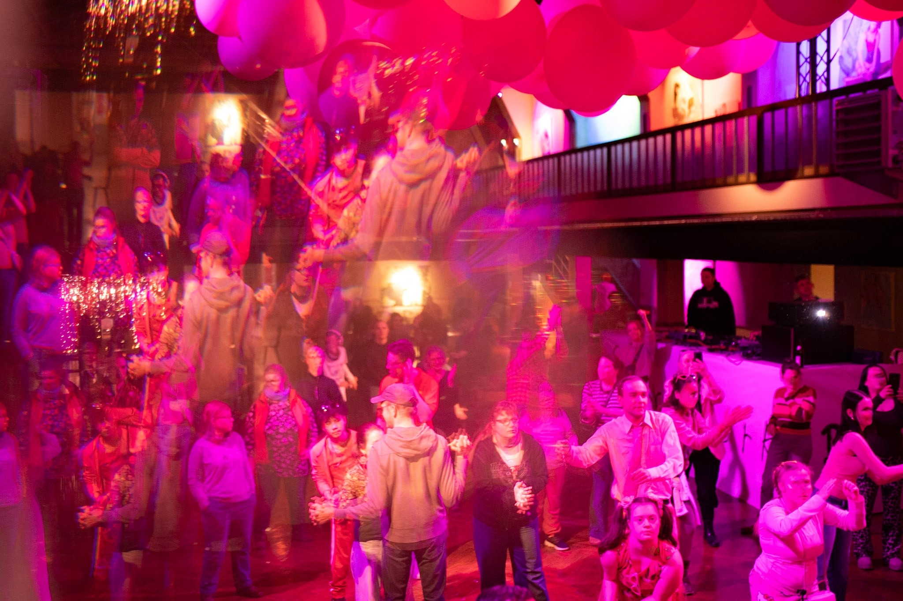
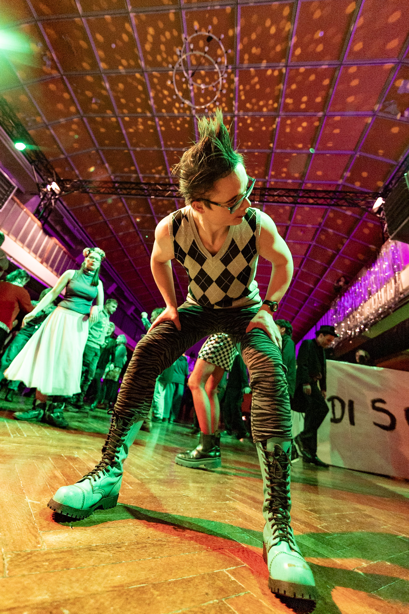
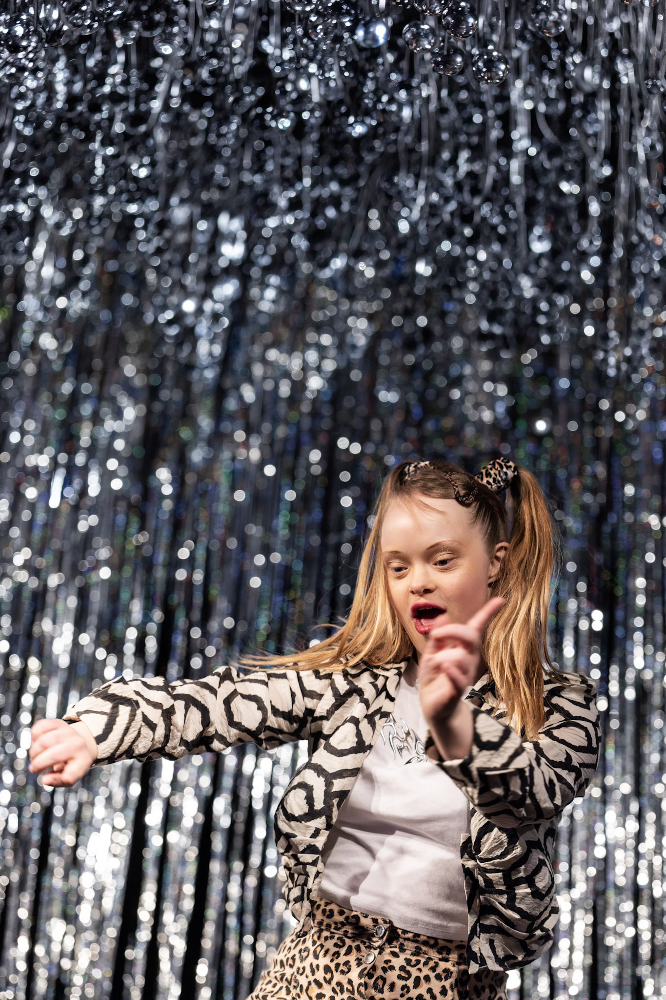
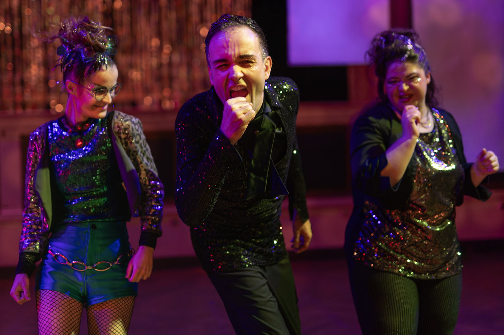
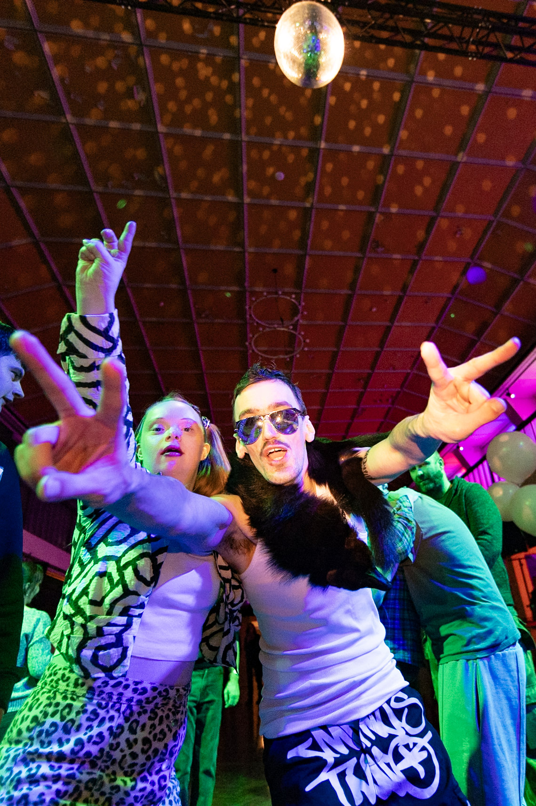

Tanzformat
Farbwerk-Disco
Zentralwerk, Dresden 2026
farbwerkDisco ist gemeinsam feiern.
farbwerkDisco ist Tanzen.
farbwerkDisco ist gemeinsam Spaß haben.
farbwerkDisco ist Menschen treffen.
farbwerkDisco ist Musik spüren.
farbwerkDisco ist Bewegung.
farbwerkDisco ist Alltag vergessen.
farbwerkDisco ist barrierearm.
farbwerkDisco ist für Menschen mit und ohne Behinderung.
farbwerkDisco ist einmal im Monat.
farbwerkDisco ist am frühen Abend.
farbwerkDisco ist für alle.
Und immer eine Überraschung.
Anlässlich des 20-jährigen Bestehens von farbwerk öffnen sich ab Januar 2026 einmal im Monat von 17 bis 21 Uhr im Zentralwerk in Dresden die Türen zur farbwerkDisco, ein innovatives Tanz-Format, das alle tanzfreudigen Menschen mit und ohne Behinderung dazu einlädt, mal so richtig abzutanzen oder einfach nur die Seele baumeln zu lassen.





